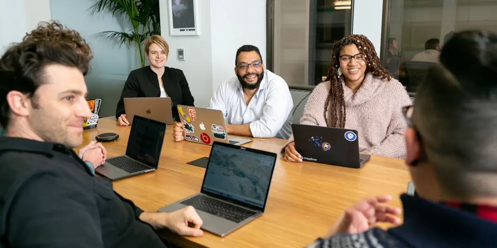
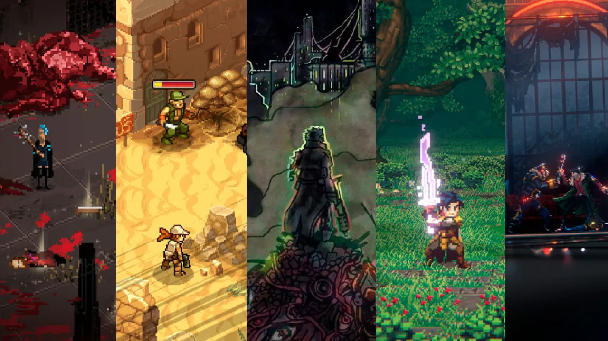

Missão:
Nossa missão é impulsionar a criatividade e a inovação na indústria de jogos indie, fornecendo uma plataforma acolhedora para desenvolvedores compartilharem suas criações únicas.
Buscamos promover a diversidade e a originalidade na produção de jogos, acreditando que cada título é uma expressão artística que merece ser descoberta e apreciada.
Comprometemo-nos a criar uma comunidade inclusiva e colaborativa, onde desenvolvedores e jogadores podem se conectar, trocar ideias e apoiar uns aos outros em suas jornadas criativas.
Visão:
Enxergamos um futuro onde a cena indie seja celebrada e respeitada por sua capacidade de inovar e emocionar os jogadores, desafiando constantemente as fronteiras do que é possível em um jogo.
Visualizamos nossa plataforma como o destino preferido para entusiastas de jogos indie, um espaço onde descobertas empolgantes aguardam a cada visita, e onde desenvolvedores têm a oportunidade de brilhar.
Aspiramos a ser um ponto de referência na indústria, reconhecidos pela qualidade dos jogos que promovemos e pelo suporte valioso que oferecemos aos talentosos criadores em ascensão.
Valores:
Criatividade Desbloqueada: Valorizamos a originalidade e encorajamos abordagens inovadoras na criação de jogos, abrindo espaço para experimentação e expressão artística.
Comunidade Empoderada: Acreditamos no poder da comunidade para impulsionar a inovação. Encorajamos a troca de conhecimento, o feedback construtivo e a colaboração entre desenvolvedores e jogadores.
Transparência e Integridade: Priorizamos a honestidade e a transparência em todas as interações, garantindo que todos os envolvidos se sintam valorizados e respeitados.
Diversidade Celebrada: Abraçamos a diversidade em todas as formas - de estilos de jogo a origens culturais. Acreditamos que a variedade enriquece a indústria e proporciona experiências mais ricas aos jogadores.
Paixão pelo Indie: Somos apaixonados por jogos indie e acreditamos no potencial ilimitado que eles têm para surpreender e emocionar os jogadores de todo o mundo.
Aprendizado Contínuo: Estamos comprometidos em aprender e evoluir constantemente, buscando sempre maneiras de melhorar a experiência para desenvolvedores e jogadores.
Respeito pela Comunidade: Respeitamos a voz e a opinião de todos os membros da nossa comunidade, promovendo um ambiente seguro e inclusivo para todos.
Inovação Orientada pelo Usuário: Levamos em consideração as necessidades e desejos dos nossos usuários, colocando-os no centro do desenvolvimento e aprimoramento da plataforma.
Sustentabilidade e Ética: Consideramos o impacto ambiental e ético em todas as decisões, promovendo práticas sustentáveis e responsáveis na indústria de jogos.
Excelência em Serviço: Buscamos a excelência em tudo o que fazemos, desde o suporte ao cliente até a curadoria de jogos na plataforma.
Empatia e Empatia: Valorizamos a capacidade de compreender e se identificar com as experiências e perspectivas dos outros, cultivando um ambiente de respeito e compreensão mútua.
Dedicação à Comunidade Indie: Somos dedicados a apoiar e elevar a comunidade indie como um todo, oferecendo recursos, orientação e visibilidade para os talentosos desenvolvedores independentes ao redor do mundo.